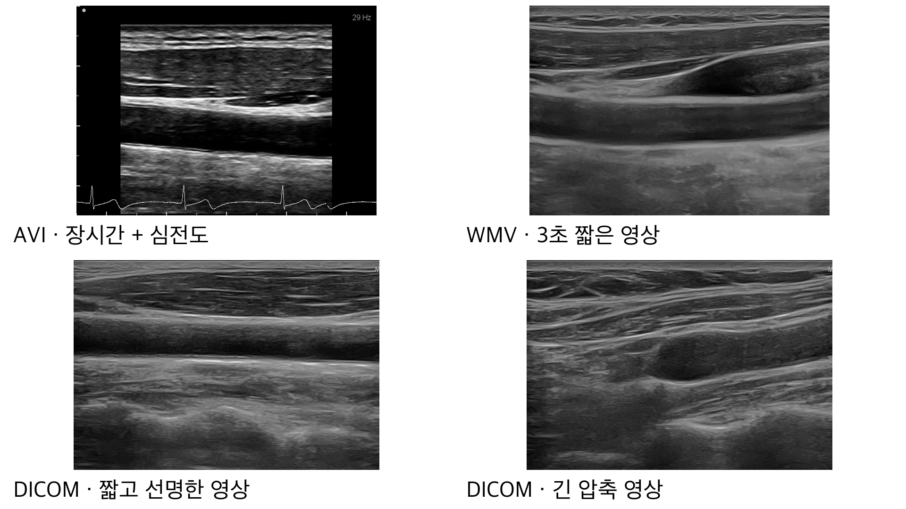
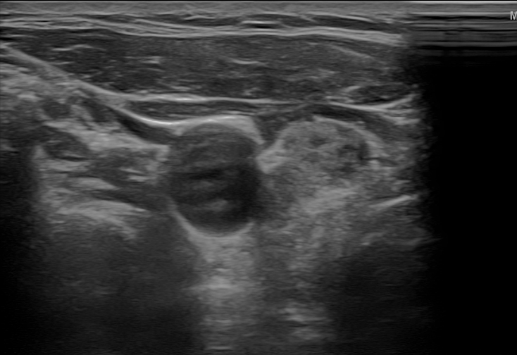
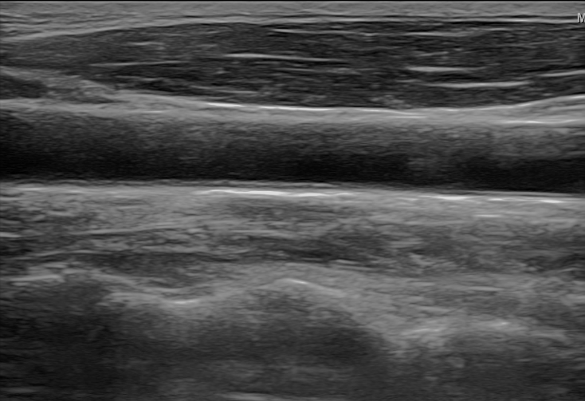
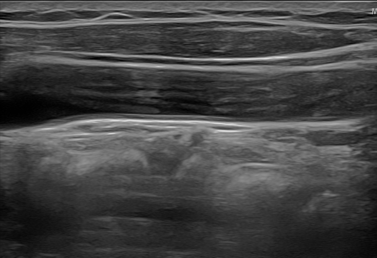
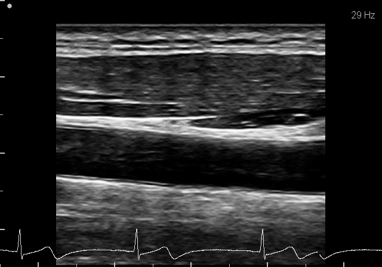

초음파 동영상과 장면별 촬영 시간을 읽습니다. 촬영 시간은 내경 변화를 박동 순서로 묶는 데 필요합니다.
LIFE STEP INTERNSHIP · PROJECT PROPOSAL
사용자 제작 라벨 기반 내강 자동 추적과 박동별 내경 분석
01 · PROJECT GOAL
초음파 동영상과 장면별 촬영 시간을 읽습니다. 촬영 시간은 내경 변화를 박동 순서로 묶는 데 필요합니다.
각 장면에서 혈관 안쪽 영역을 찾고, 위·아래 경계 사이의 거리를 내경으로 계산합니다.
박동별 최소·최대 내경과 근거 장면을 보여주고, 값이 갑자기 흔들린 구간만 다시 확인합니다.
02 · PROBLEM EVIDENCE
가장 긴 대상자는 약 15,100장면입니다. 사람이 모든 장면의 혈관 경계를 반복해서 그리고 재는 것은 현실적으로 어렵습니다.
AI가 장면마다 내강과 내경을 계산하고, 여러 장면을 박동별 최소·최대값으로 묶어 반복 작업을 줄입니다.
잡음이나 탐촉자 움직임이 있는 장면에서는 값이 틀릴 수 있어, 급변 구간과 근거 장면을 함께 보여줘야 합니다.
03 · MEDICAL SCOPE
04 · MEASUREMENT PIPELINE
모든 장면과 촬영 시간
장면마다 내강 영역 표시
위·아래 경계 거리
최소·최대·변화량
근거 장면과 이상 구간
05 · DATA INVENTORY
총 11명·22개 영상은 단순한 규모 소개가 아닙니다. 사람, 장비, 영상 길이와 압축 방식이 달라서 데이터 분리와 평가 방식을 정하는 근거가 됩니다.
| 파일 형식 | 사람·영상 | 장면 수 | 분석상 의미 |
|---|---|---|---|
| AVI | P003 · 7개 | 약 15,100 | 장시간·심전도 포함, 유일한 다른 장비 |
| WMV | P001·P002 · 각 2개 | 각 약 220 | 3초 클립, 기존 라벨과 화면 위치 일치 |
| 긴 의료영상(DICOM) | P004~P008 · 7개 | 171~569/영상 | 압축된 영상, 종단면 구간만 골라 사용 (종단면이 불확실한 1개 제외) |
| 짧은 의료영상(DICOM) | P009~P011 · 4개 | 114~117/영상 | 비압축 영상, 약 3초의 선명한 사례 |
| TIFF 영상 | 불특정 다수 · 500장 | 정지영상 | 대상자·장비 정보 없음, 이번에는 사용하지 않음 |
06 · VISUAL DATA EVIDENCE
아래 이미지는 발표에 사용할 비식별 대표 장면입니다. 파일 형식뿐 아니라 길이, 압축, 촬영 각도에 따라 혈관 경계의 선명도와 위치가 달라집니다.

07 · ELIGIBLE FRAME EVIDENCE



08 · PERSON-LEVEL SPLIT
09 · TIFF IMAGES
인터넷에서 수집한 TIFF 500장은 밝기·해상도·화면 구성이 다양하지만, 대상자와 촬영 장비 정보는 확인할 수 없습니다. 기대 효과보다 라벨 비용과 불확실성이 커서 제외합니다.
10 · LABELING STANDARD
라벨은 혈액이 흐르는 검은 공간인 ‘내강’을 직접 그린 정답입니다. 같은 라벨이라도 내경 측정에 쓸 수 있는지에 따라 등급을 나눕니다.
경동맥과 위·아래 내강 경계가 선명함
분할 학습 + 내경 평가
내강은 그릴 수 있지만 일부 벽이 흐리거나 끊겨, 측정 위치에 따라 내경값이 달라질 수 있음
분할 학습 사용 · 내경 평가 제외
경동맥 또는 경계를 확신하기 어려움
학습 제외 · 검토 사례 보관
11 · LABELING WORKFLOW
처음 10장으로 도구 사용법과 장당 시간을 확인한 뒤 나머지 영상을 진행합니다. A와 B는 내강을 그리고, C는 그리지 않고 제외 사유만 기록합니다.
Label Studio 로컬 프로젝트에 first10 폴더의 PNG 10장부터 추가
위쪽 혈관 벽의 안쪽 경계를 왼쪽에서 오른쪽으로 찍기
아래쪽 벽의 안쪽 경계를 오른쪽에서 왼쪽으로 찍고 다각형 닫기
A/B/C를 고른 뒤 제출하고, 완료 후 JSON으로 내보내기
ls_export_to_masks.py를 실행하면 PNG 마스크, A/B/C 등급, 제외 사유와 장당 작업 시간이 저장됩니다.12 · LABEL VOLUME & FLYWHEEL
처음 3명만 직접 그려 초기 모델을 만들고, 나머지 학습·검증 대상자는 모델이 만든 초안을 고칩니다. 시험 대상자만은 공정한 채점을 위해 처음부터 직접 그립니다.
| 대상 | 사람당 | 합계 | 방식 | 설계 이유 |
|---|---|---|---|---|
| P001~P003 | 26장 | 78장 | 직접 | 초기 모델을 학습시킬 첫 정답 |
| 학습·검증 6명 | 15장 | 90장 | 초안 수정 | 같은 장비 영상이라 초기 모델 초안을 고쳐 시간 절약 |
| 시험 P004·P009 | 각 30장 | 약 60장 | 직접 | 모델 초안을 쓰면 모델이 자기 답을 채점하게 됨 |
P001~P003 78장
최종 모델과 같은 방식, Mac 약 20분
학습·검증 6명 90장
9명 × 30~40장
13 · PREPROCESSING RATIONALE
| 처리 | 구체적 방법 | 근거 |
|---|---|---|
| 개인정보 영역 제거 | 초음파 영역만 남기고 기관명·이니셜·날짜 제거 | 개인정보 보호, 글자를 혈관으로 오인하는 문제 방지 |
| 심전도 분리 | AVI 하단 심전도 띠를 영상 분석에서 빼고 별도 저장 | 혈관 찾기에는 방해되지만 박동 검증에는 활용 |
| 프레임 추출 | AVI 0.5초, WMV 0.1초, 긴 DICOM 0.2초, 짧은 DICOM 0.1초 | 후보 수 확보와 연속 중복 감소의 균형 |
| 흑백·밝기 통일 | 1채널, 영상별 평균 0·표준편차 1 | 색 정보 제거, 장비별 밝기 차이 감소 |
| 1픽셀=0.1mm로 통일 | 영상과 정답 영역을 같은 크기 기준으로 변환 | 장비가 달라도 혈관 크기를 같은 척도로 표현 |
| 측정할 때 전체 영상 사용 | 계산 편의를 위한 여백을 붙인 뒤 원래 위치로 복원 | 내경 측정 오차 최소화 |
14 · CALIBRATION & TIME AXIS
| 영상 | 보정값 | 근거 | 표시 원칙 |
|---|---|---|---|
| WMV · P001·P002 | 0.0694mm/px | 같은 검사의 DICOM 보정 정보, 화면 위치 오차 0픽셀 | mm 확정 |
| DICOM · P004~P011 | 0.0694mm/px | 파일 안에 저장된 픽셀 크기 정보 | mm 확정 |
| AVI · P003 | 0.078mm/px | 깊이 눈금 64px을 5mm로 가정 | 보정 미확정 참고값 |
15 · TRAINING ENVIRONMENT
PyTorch의 MPS 기능은 학습 연산을 macOS의 Metal GPU로 보냅니다. 영상 준비는 CPU가 담당하고, 시간이 많이 드는 모델 계산은 GPU가 담당하도록 나눕니다.
Python 가상환경에 PyTorch와 분할 모델 패키지 설치
영상 읽기·크기 통일·밝기 변화·무작위 자르기
모델 계산·오차 계산·역전파·가중치 갱신을 MPS에서 실행
중간 모델과 검증 결과를 Mac에 저장해 중단·재개
MacBook Air의 CPU와 GPU가 같은 통합 메모리를 사용
혈관이 충분히 들어오면서 계산량을 줄이는 기본 입력 크기
한 번에 8장을 학습하며 실제 GPU 메모리는 약 2.4GB
혼합 정밀도 대신 32비트 계산으로 먼저 안정성을 확보
16 · MAC GPU BENCHMARK
AVI·WMV 실제 프레임 660장을 사용하고, 최종 학습과 같은 전처리·U-Net+ResNet34·오차 계산·배치 8을 적용해 60 epoch를 연속 실행했습니다.
| 확인 항목 | 실험 방법 | 실측 결과 | 계획에 반영한 내용 |
|---|---|---|---|
| GPU 실행 여부 | MPS 사용, CPU 대체 실행을 끄고 60 epoch 연속 학습 | 지원되지 않는 연산 오류 없이 완료 | 필요한 학습 연산을 Apple GPU에서 실행 가능 |
| 메모리·초기 속도 | 입력 256×256, 배치 8 | GPU 메모리 2.4GB, 초반 1스텝 약 0.31초 | 16GB 환경에서 배치 8을 기본값으로 사용 |
| 연속 학습 발열 | 팬 없는 MacBook Air에서 60 epoch 연속 실행 | epoch 평균 16.2초 → 26.4초, 약 63% 증가 | 빠른 초반값이 아닌 발열 이후 속도로 시간 산정 |
| 전체 영상 추론 | 원래 크기의 실제 프레임을 한 장씩 처리 | 프레임당 중앙값 약 43ms | 전체 동영상 분석을 로컬에서 수행 가능 |
17 · BASE MODEL EVIDENCE
| 근거 | 계획서에 정리된 결과 | 이 프로젝트에 적용한 판단 |
|---|---|---|
| Xie et al. | 총경동맥(CCA: 목에서 갈라지기 전의 큰 경동맥) 내강 분할에서 약 97% 일치도 | 경동맥 내강 분할에 U-Net이 직접적인 선행 근거를 가짐 |
| Lainé et al. | 경동맥 벽 분할 오차가 전문가 간 차이보다 작음 | 초음파 경계 분할의 실용 가능성 근거 |
| nnU-Net Revisited | 같은 조건 비교에서 U-Net 계열이 더 큰 최신 모델보다 우수 | 소량 데이터에서 복잡한 모델을 먼저 쓰지 않음 |
| He et al. 2025 | 초음파 라벨이 적을수록 미리 학습된 모델이 유리 | 일반 이미지로 미리 학습한 가중치에서 시작 |
| 우리 데이터 | 라벨 수가 수백 장이고 대상자는 11명 | 18층과 50층 사이인 ResNet34를 시작점으로 선택 |
18 · ALTERNATIVE MODELS
| 다른 선택지 | 장점 | 이번에 먼저 쓰지 않는 이유 | 남긴 역할 |
|---|---|---|---|
| HRNet-W18 고해상도 모델 | 작은 구조를 잘 보존 | 결과 해상도가 낮고 학습이 약 2.2배 느려, 약 0.5mm 변화 측정에 불리함 | 여유가 있으면 1회 비교 |
| nnU-Net 자동 설정 모델 | 설정을 자동으로 정함 | 기본 학습량이 현재 데이터 규모에 비해 너무 큼 | 학습·검증 원칙만 활용 |
| Transformer·Mamba 대형 모델 | 넓은 범위의 관계 표현 | 소량 데이터에서 U-Net보다 낫다는 근거가 약하고 계산량이 큼 | 이번 우선순위에서 제외 |
| SAM·MedSAM 클릭 보조 모델 | 사람이 클릭한 영역 분할 | 매 장면마다 입력이 필요해 전체 영상 자동 추적에 맞지 않음 | 라벨 그리기 보조 후보 |
19 · SEARCH DESIGN
먼저 성능에 영향이 큰 학습 방식과 오차 계산법을 고르고, 그다음 영상 변화와 신경망의 층 수를 좁혀 갑니다. 각 단계의 비교 목적을 하나로 제한합니다.
20 · DIAMETER & PULSE

내강 마스크에서 혈관의 중심선을 계산합니다.
중심선에 수직인 위·아래 경계 거리를 잽니다.
영상 중앙의 안정된 구간에서 대표 내경을 계산합니다.
최소·최대·변화량과 여러 박동의 대표값을 냅니다.
21 · OUTPUT & PRIORITY
지원하는 초음파 영상 파일
모든 장면에서 내강과 내경 계산
박동별 최소·최대 내경과 변화 그래프
신뢰도가 낮거나 값이 급변한 장면으로 이동
수치·그래프·근거 장면을 PDF로 저장
| 필수 | 권장 | 선택 |
|---|---|---|
| 전체 분석·박동 요약·그래프·PDF·검토 구간 | 원본 위 AI 경계·mm 보정 표시 | 폴더 감시·앱 내 경계 수정·의료진 승인 PDF |
22 · METRIC RATIONALE
AI 영역과 정답 영역이 얼마나 겹치는지 보는 Dice 점수
0.1mm/px에서 경계 1~2픽셀 수준의 측정 오차 목표
약 0.5mm 변화의 30% 이내이며 반복 라벨 결과로 다시 확인
박동별 요약이 성립하기 위한 전제 조건
23 · EVALUATION DESIGN
P001과 P006의 결과를 같은 비중으로 평균냅니다. 영상이 많은 한 사람이 선택을 좌우하지 않게 합니다.
P004와 P009는 모델과 설정을 모두 정한 뒤 한 번만 봅니다. 시험 결과에 맞춰 설정을 다시 바꾸지 않습니다.
나머지 9명을 세 묶음으로 바꿔 평가해, 특정 사람에게만 잘 맞은 결과인지 확인합니다.
24 · LIMITATIONS & RESPONSES
25 · DECISIONS
진단이 아닌 내강 측정·박동 요약·검토 지원으로 한정
사람 단위 7·2·2 분리, P004·P009 시험 잠금, 9명 교차검증 병행
전체 영상 분석, 박동별 내경 요약, 검토 구간, AI 분석 초안 PDF
질문과 의견을 반영해 계획을 확정하겠습니다.